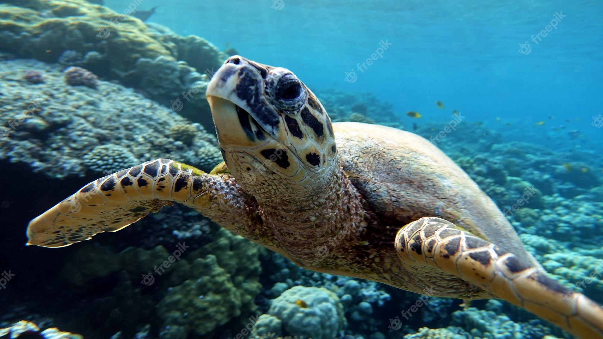
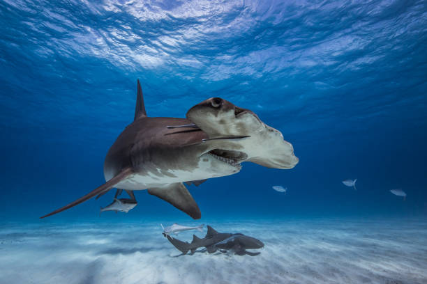
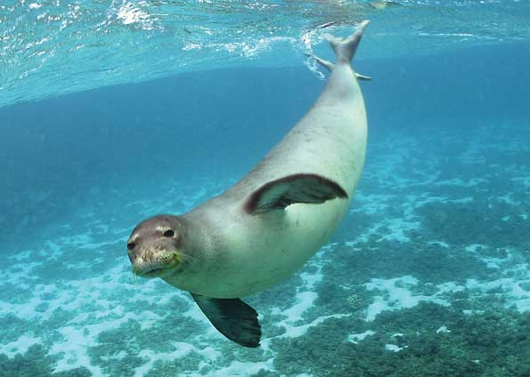
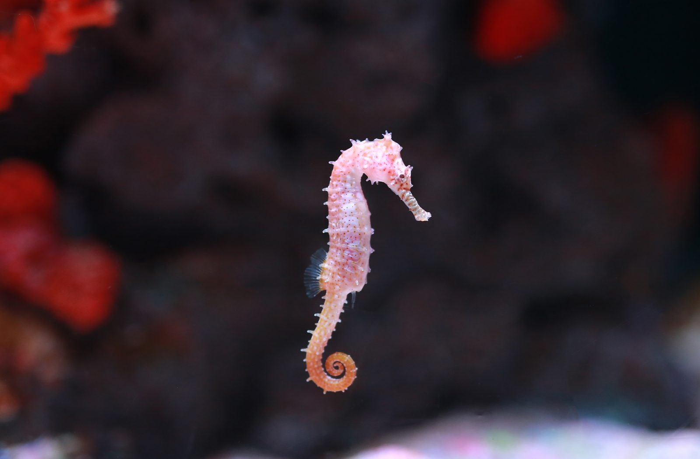

Animais marinhos ameaçados de extinção
Tartaruga de pente
A tartaruga-de-pente (Eretmochelys imbricata) é Classificada como criticamente ameaçada. Sua principal distribuição é em águas tropicais ao redor do globo, mas também tem alguma presença em áreas subtropicais. Ela se aninha em cerca de 70 países e habita mais de 108. Nas últimas três gerações, a população diminuiu pelo menos 80% e por isso é um dos animais marinhos ameaçados de extinção desta lista. A principal causa de seu status de conservação é a matança de milhões de tartarugas-de-pente no século passado para o comércio de seu casco. As maiores caçadas tiveram lugar na Ásia, nos Estados Unidos e na Europa. A exploração de seus ovos, o consumo de sua carne e a alteração dos ecossistemas de nidificação também desempenhou um papel importante para reduzir sua população. As tartarugas-de-pente medem por volta de 90 cm quando adultas. Vivem principalmente em regiões tropicais, onde costumam se alimentar de esponjas-do-mar. Seus registros na região costeira Rio Grande do Sul são muito raros, e alguns dos animais que foram encontrados à próximos região eram híbridos com tartaruga-cabeçuda. Foram extremamente impactados pela caça, já que era comum o uso do seu caso para fabricar itens decorativos como armações de óculos ou pentes. A Tartaruga de Pente se reproduz a cada dois anos em locais como as lagoas isoladas em ilhas remotas. Para a subespécie do Atlântico, o período ideal seria entre abril e novembro. Por outro lado, os indivíduos do Indo-Pacífico se reproduzem entre setembro e fevereiro. E logo após o acasalamento, as fêmeas migram para as praias durante a noite e cavam um buraco com o uso da barbatana traseira. Este buraco é o local em que elas constroem o ninho para colocar os ovos e logo cobri-los com areia. Geralmente elas colocam até 140 ovos e retornam ao mar. Sendo assim, saiba que as tartaruguinhas nascem após dois meses com menos de duas dezenas de gramas. A coloração é escura e a carapaça tem um formato de coração, medindo 2,5 mm de comprimento. Apesar de novas, as tartaruguinhas migram para o mar porque são atraídas pelo reflexo da lua sobre a água. Quando nascem, essas espécies vão instintivamente para o mar, geralmente esse processo é feito à noite e as tartarugas de pente que não chegam à água antes do amanhecer podem ser comidas por pássaros ou outros animais predadores. Atingem a maturidade sexual entre os 20 e 40 anos. Portanto, os indivíduos que não conseguem migrar servem de alimento para predadores como os caranguejos e aves.
Tubarão-martelo-panã
O tubarão-martelo-panã (Sphyrna mokarran), também conhecido como tubarão-panã ou cação-panã, é uma incrível espécie marinha ameaçada de extinção. Também está distribuída globalmente em águas tropicais e mares quentes e temperados, com faixas que vão desde áreas pelágicas costeiras até cerca de 300 metros de profundidade. Estima-se que, durante as últimas três gerações, o tubarão-martelo-panã sofreu um declínio populacional de mais de 80%. A principal causa de seu status é a captura direta para o comércio de barbatanas, muito procuradas. Outras partes do corpo também são consumidas. O tubarão-martelo-paña pode atingir tamanhos de até 6 metros de comprimento. No entanto, é raro ver organismos tão grandes, então seu tamanho normal é de cerca de 4 metros. Da mesma forma, o peso médio de um espécime adulto costuma ser superior a 500 quilos, sendo as fêmeas maiores e mais pesadas que os machos. Quanto ao aspecto, a primeira barbatana dorsal é muito alta e pontiaguda, enquanto a segunda é reduzida. Por outro lado, sua barbatana anal tem o típico formato em “V”, com a parte superior mais longa que a inferior. Além disso, o corpo desse tubarão apresenta coloração cinza-acastanhada no dorso com ventre claro, o que é uma adaptação para a captura de presas. A principal característica desse tubarão é a cabeça em forma de martelo que mantém a aparência em “T”, com os olhos e as narinas localizados nas extremidades. Esse traço particular é o que causa seu nado ondulado, já que ele precisa mover a estrutura da cabeça de um lado para o outro para poder verificar os arredores com os olhos. É uma espécie vivípara cuja gestação dura aproximadamente 11 meses. Além disso, considera-se que esse organismo tem um ciclo reprodutivo semestral que termina com o parto entre os meses de julho e setembro. A fêmea dá à luz entre 6 e 42 indivíduos aproximadamente e os pequenos espécimes nascem com tamanhos de 46 a 70 centímetros. Atualmente, existem diferentes leis que regulamentam a caça e a venda desses animais. No entanto, muitas dessas ações ainda não entraram em vigor, uma vez que as populações desses espécimes continuaram diminuindo por anos. No final das contas, o conflito que eles enfrentam também é social, uma vez que o consumo de carne e barbatanas de tubarão está enraizado em muitas culturas. Essa situação é uma consequência indireta da pesca comercial, uma vez que é comum capturar o tubarão-martelo por engano. Além disso, esses peixes também são muito valorizados na pesca competitiva, visto que muitas vezes são considerados excelentes troféus.
Foca-monge-do-mediterrâneo
A foca-monge-do-mediterrâneo (Monachus monachus), aqui também conhecida como lobo-marinho,apesar de alternar sua permanência em áreas terrestres, passa cerca de 70% de seu tempo na água e é, portanto, considerada um animal principalmente marinho. É um dos animais aquáticos ameaçados de extinção porque costumava ter uma ampla distribuição, mas agora está principalmente, e em menor grau, localizado em algumas áreas do Mar Mediterrâneo, ao largo das costas da Grécia, Chipre e em direção ao sul da Turquia. Há alguns pequenos grupos isolados em outras regiões, mas foi extirpada de muitas áreas. Este tipo de foca é considerada um dos mamíferos mais ameaçados da Terra, devido à caça direta para consumo, uso comercial e até mesmo a matança nas zonas pesqueiras para eliminá-la como um competidor para os peixes. este mamífero marinho de porte imponente, um dos maiores da família dos focídeos, pode atingir três metros de comprimento e pesar trezentos quilogramas. Uma constituição física assim requer alimento em abundância e se há aspecto com que os lobos-marinhos não brincam são as suas refeições. Apneístas exímios, mergulham por mais de quinze minutos em fundos rochosos e baixios próximos da costa, de forma a garantir peixe variado, cefalópodes e alguns crustáceos no seu cardápio. Quando esgotados das suas caçadas, estes seres admiráveis podem desfrutar de longas sestas no fundo marinho, retomando pontualmente o fôlego à superfície, sem acordar. Vivem 20 a 25 anos solitários, o limite da sua longevidade, mas tornam-se mais gregários na época de criação. Durante esta fase, procuram praias abrigadas no interior de grutas ou mesmo praias abertas para acompanharem as suas crias durante quatro meses. À semelhança dos humanos, o período de gestação é de nove meses. A fecundação ocorre quando os machos, sorrateiramente, tentam a sua sorte na fase mais receptiva das fêmeas. Ou seja, durante as brincadeiras e ensinamentos das progenitoras com os seus descendentes no mundo subaquático. O lobo-marinho também é um predador que está no topo da cadeia alimentar. A sua presença indica que estamos perante um habitat bem preservado. Com o tempo, a luta pela sua conservação tem vindo a mudar mentalidades. Numa época em que o turismo de natureza é visto como uma estratégia eficaz para o desenvolvimento económico, a proteção de pérolas do património natural português, como as focas que uivam como lobos, é fundamental.
Cavalo-marinho-branco
Os membros do gênero Hippocampus, que corresponde a um tipo de peixe, não escaparam dos impactos humanos. Neste sentido, o cavalo-marinho-branco (Hippocampus whitei) também é um dos animais ameaçados de extinção. Todas as indicações são de que a espécie é endêmica do sudeste da Austrália. Estima-se que a população total tenha diminuído em cerca de 50-70% ao longo dos anos. Este animal desenvolve uma alta fidelidade a locais de habitat específicos, que têm sido fortemente impactados pelo desenvolvimento costeiro, ancoragem de barcos, poluição e também foram identificados processos de sedimentação nestas áreas. O estudo global sobre o status de conservação desses animais revela que 14 entre 42 espécies mapeadas do Hippocampus (nome científico do peixe) estão ameaçadas de extinção. As Pressões da pesca predatória, degradação do habitat, exploração ilegal e principalmente, falta de informação que contribuem para o quadro preocupante. Segundo a pesquisa, publicada no periódico científico Oryx, da Universidade de Cambridge, há déficits de dados e informações sobre 17 espécies de cavalos-marinhos, o que inviabiliza uma avaliação abrangente da conservação e medidas protetivas bem direcionadas. Contribui ainda para a vulnerabilidade das espécies o fato desses animais habitarem áreas de fácil acesso aos humanos, como recifes, baías, manguezais e costões rochosos, o que os torna suscetíveis à poluição e ao comércio ilegal. A exploração de cavalos-marinhos de forma clandestina é puxada principalmente pela Ásia, que utiliza os animais na forma seca para fins medicinais e ornamentais.